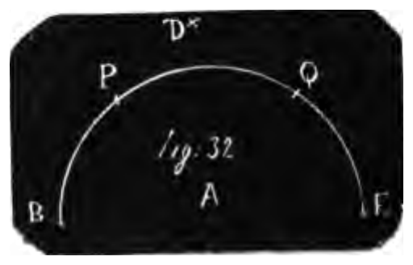

§§ 82–85: Esaminare collinearità, perpendicolarità e parallelismo¶
82. Prob. Esaminare se i tre punti \(A, B, C\) sono in linea retta (fig. 31).

Sol. Coi centri \(A\) e \(C\), e con un raggio arbitrario, per esempio \(AC\), si segnino due archi, che si taglino in \(D\) ed \(E\). Si osservi, se sia \(DB = ED\). Se ciò è; i tre punti \(A, B, C\) sono in linea retta. Altrimenti no.
Dim. Se è anche \(DB = EB\), sarà l’angolo \(DAB = EAB = \frac{1}{2} DAE\) (8, lib. I), a cagione dei lati eguali tra loro ne’ due triangoli \(DAB, EAB\). Ma nei triangoli \(DAC, EAC\) per la stessa cagione sono eguali gli angoli \(DAC, EAC\), e però eguali ciascuno alla metà dell’angolo \(DAE\). Dunque sarà \(DAB = DAC\); e quindi i tre punti \(A, B, C\) in linea retta. Se poi \(DB\) sia maggiore o minore di \(EB\); anche l’angolo \(DAB\) sarà maggiore o minore dell’angolo \(EAB\) (25, lib. I), e quindi non potrà essere eguale all’angolo \(DAC\), non potendo essere eguale
f. 0070 · p. 45alla metà dell’angolo \(DAE\). Dunque i tre punti \(A, B, C\) non potranno essere in linea retta.
83. Prob. Dati i tre punti \(A, B, D\) esaminare se la \(DA\) sia perpendicolare ad \(AB\) (fig. 32).


Sol. Si duplichi la \(AB\) in \(E\) (§ 64) per via del semicircolo \(BPQE\). Si osservi se sia \(DB = DE\). Se lo è, l’angolo \(DAB\) è retto. Altrimenti non lo è.
Dim. Essendo retta la \(BAE\) diametro del cerchio; la \(DA\) farà con essa due angoli, la somma de’ quali sarà eguale a due retti (13, lib. I). Ne’ due triangoli poi \(DAE, DAB\), che hanno i lati \(AE, AB\) eguali fra loro, e il lato \(AD\) comune, se il lato \(DE\) sarà eguale al lato \(DB\); anche l’angolo \(DAE\) sarà eguale all’angolo \(DAB\) (8, lib. I), e però entrambi retti. Se poi \(DE\) sarà maggiore, o minore di \(DB\); anche l’angolo \(DAE\) sarà maggiore o minore dell’angolo \(DAB\); quindi uno sarà acuto, e l’altro ottuso (25, lib. I).
84. Prob. Esaminare se la retta, che passa per due punti dati \(D, F\) (fig. 33), sia perpendicolare alla retta, che passa per altri due punti dati \(A, B\).

Sol. Per via del punto \(D\) si trovi la perpendicolare \(DE\) alla \(AB\) (§ 78). Si esamini, se i tre punti \(D, E, F\) sono in linea retta (§ 82). Se sì; la \(DF\) è perpendicolare alla \(AB\); altrimenti no.
Dim. Poichè la \(DE\) è perpendicolare per costruzione; se lo è anche la \(DF\), sarà la stessa retta; poichè da un punto \(D\) ad una retta \(AB\) non si possono condurre due perpendicolari (Coroll. Prop. 32, lib. I).
85. Prob. Dati due punti \(A, B\) d’una retta (fig. 34) e due \(C, D\) d’un’altra; esaminare se sieno parallele.
Sol. Si faccia ad \(AD = AE\); a \(BD = BE\) (§ 11). Si faccia pure ad \(AC = AF\), a \(BC = BF\). Si osservi, se sia \(DE = CF\);
f. 0071 · p. 46se ciò è; saranno parallele; se no; convergeranno dalla parte della minore.

Dim. Le \(DE, CF\) sono perpendicolari alla \(AB\), e sono tagliate per metà da essa in due punti \(M\) ed \(N\) (§ 14). Dunque sono duple rispettivamente delle distanze \(DM, CN\) dei punti \(D\) e \(C\) dalla retta \(AB\). Se dunque saranno eguali, le distanze saranno eguali, e quindi le \(AB, DC\) parallele; altrimenti convergeranno.